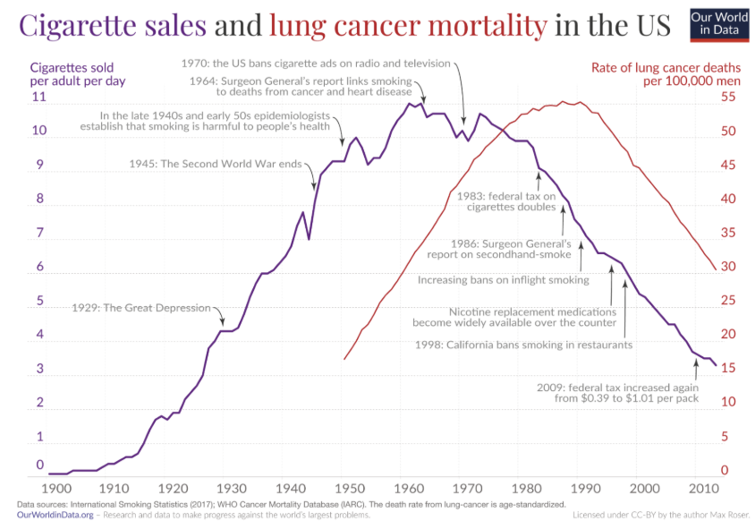

cigarettes and vapes have many harmful substances and chemicals. some of these subtances and chemicals are in both vapes and cigarettes, but some are different. some subtances are tar, carbon monoxide, and other heavy metals. one well known substance includes nicotine. nicotine is a drug used in cigarettes and vapes, its harmful in many ways but one is that it is addictive. the problem with the adictivness of nicotine is that it can make a user of it want to use it more. causing more harm over time.
smoking can cause alot of problems. they can damage alot of cells but i will focus on Alveolar Epithelial Cells. the Alveolar Epithelial Cells are tiny cells lining tiny air sacs in the lungs for handling fluid balance, gas exchange and tissue repair. these sacs get affected by smoking in many ways, including (but not limited to): inflamation, cell death, and increased permeability. lowering protection to the lungs.
smoking damages the lungs in many bad ways. it can block airways, damage cells, and effect other organs around it.

in the image above, there are interesting things to point out. in the graph, you can see that lung cancer deaths go up as smoking starts to take off. as the graph reaches the peak, research starts to come out about smoking being linked to shorter lifespan. which in turn makes the graph shoot down, people stopping smoking and also effecting the graph of lung cancer cases. (both going down)
smoking is not a great thing, given evidence above. it has lots of effects on society, the people mostly targeted and affected by smoking is usually elderly or people in tough times. people use smoking and vaping as a way to escape from life for some time, even when its not a good thing. it can end many things, friendships, relationships, and even lives. cutting lives short and affecting family.
there are many websites out there to support and help people who struggle with smoking and vaping problems. many can include:
quit hq - a website with information about resources they can offer you, they have free ct scans and hotlines for people who struggle.
icanquit - a website which also includes resources. specifically an app of sorts that help you make goals to quit smoking.
many of these website have helped many people turn their life around, and most likely save lives. smoking isnt great and shortens life spans. but if you do smoke. there shouldnt be shame. you can always change and there are lots of other people to help you.